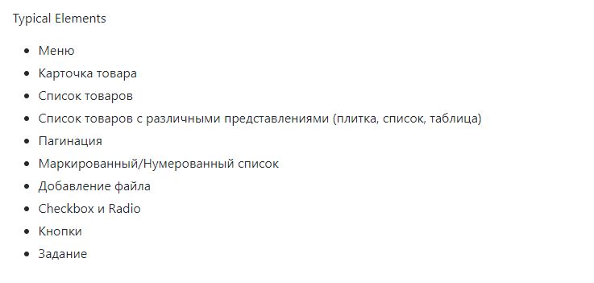
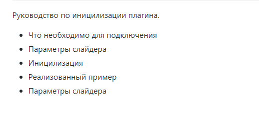
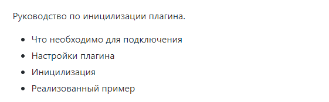
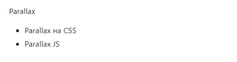
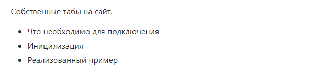
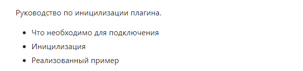
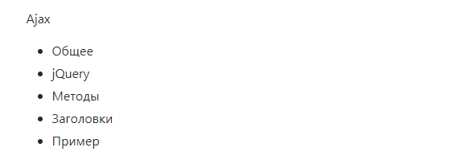
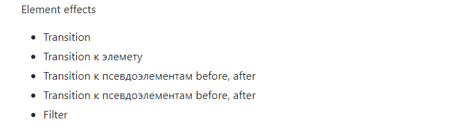

Навигация по статьям
TypicalElements
Типовые элементы используемые на странице
ToolTip
Всплывающие подсказки

SlickSlider
Руководство по иницилизации плагина.
PopUp
Руководство по иницилизации плагина.
Parallax
Эффект parallax
CustomTabs
Собственные табы на сайт.
customSelect
Руководство по иницилизации плагина.
Ajax
Статья о Ajax
elementEffect
Эффекты наведения
